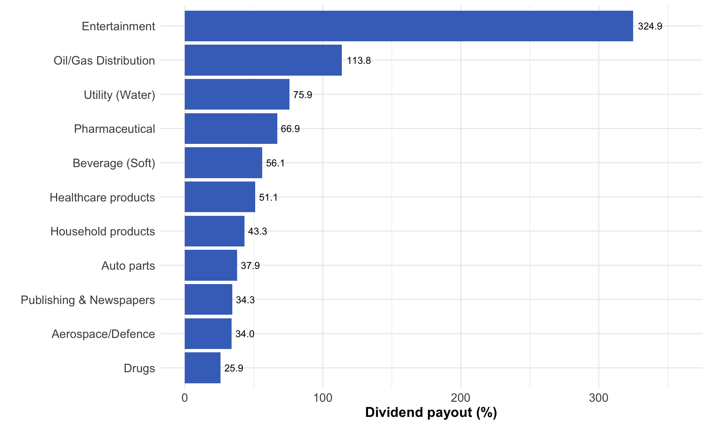

Dividend Policy
Day 3 - Morning Session
Dividend Policy
Learning Outcomes
After completing this session, you should be able to:
- Describe the nature of dividends and evaluate the arguments concerning their potential impact on shareholder wealth
- Identify and discuss the factors that influence dividend policy in practice
- Describe the nature of different dividend policies
- Discuss the case for and against different forms of distribution
Note
These outcomes align with the module’s broader learning objectives of critically examining issues surrounding corporate financing and dividend policy.
Introduction to Dividends
Dividends represent a return by a business to its shareholders. Key characteristics include:
- Companies rarely make dividend payments based solely on profits available to shareholders
- The dividend payout ratio = dividend paid / earnings available for dividends
- In the UK, dividends are often paid twice per year (interim and final)
- When share prices include accrued dividend payable, they are called “cum-dividend” share prices
- When dividends are paid out, share prices typically decrease by the same amount to the long-term stable level (“ex-dividend”)
Important
Understanding the relationship between dividends and share prices is fundamental for evaluating dividend policies and their impact on shareholder wealth.
Dividend Payout Patterns
Average dividend payout ratios vary significantly across industries:
- Entertainment sector shows extremely high payout ratios (324.89%)
- Publishing & Newspapers also demonstrate high ratios (113.76%)
- Most sectors maintain payout ratios between 30-70%
- Pharmaceutical and technology sectors tend to have lower ratios
Dividend Policy: Two Major Schools of Thought
The fundamental question in dividend policy: Does the pattern of dividends affect shareholder wealth?
- Shareholders prefer dividends now because amounts are more certain
- The implications for managers: adopt as generous a dividend policy as possible
- Based on the dividend valuation model - share price is determined by future streams of dividend receivable
- In perfect and efficient markets, dividend policy doesn’t affect shareholder wealth
- Companies should invest in all projects with positive NPVs
- Only investment decisions affect shareholder wealth
- Investors can create “home-made” dividends by selling shares if needed
Modigliani-Miller Dividend Irrelevance Theory
The MM theory is based on four key assumptions:
- No share issue costs
- No share transaction costs
- No taxation
- Rational behaviour among managers and investors
Note
Under these assumptions, MM argue that dividend policy is irrelevant to shareholder wealth. The value of a firm depends solely on its investment decisions, not on how it distributes earnings.
MM Theory - Dividend Irrelevancy
- Given perfect and efficient markets, dividend policy doesn’t affect shareholder wealth
- Companies should invest in all projects with positive NPVs, as only investment decisions affect shareholder wealth
- If a company doesn’t pay dividends, shareholders can create “home-made” dividends by selling some shares
- Assumes shareholders have all information about a company and interpret it correctly
Tip
The MM theory provides a theoretical baseline, but real-world imperfections (taxes, transaction costs, information asymmetry) may cause dividends to matter.
Dividend Relevancy Theory
- The dividend valuation model suggests share price is determined by future streams of dividend receivable
- Higher retention of earnings for investment is considered to result in higher future earnings, leading to higher dividends
- Higher dividends should lead to higher share prices
- Therefore, an optimum dividend policy exists
Important
This view directly contradicts the MM position by suggesting that the pattern of dividends does impact shareholder wealth.
Residual Dividend Theory
- Raising external finance is costly, so retentions should be the first source of funds a company uses
- All positive NPV projects should be invested in before dividends are paid out
- If retained funds are not invested to earn returns greater than investors’ required rate of return, shareholder wealth will diminish over time
Case Study: Microsoft and Apple
Microsoft used to follow the ethos of the residual dividend theory: - For 17 years, it did not pay dividends, retaining funds for research and development - However, as cash balances increased, shareholder pressure led to dividend payments starting in 2003 - The first dividend was 8¢ per share, increasing to 51¢ by December 2019
- From 1990 to 1995, Apple paid a constant quarterly dividend of $0.12 per share
- Stopped dividends from 1995 to 2012 to retain funds for reinvestment
- Under shareholder pressure due to large cash reserves, resumed dividend payments in 2012
- By April 2020, the quarterly dividend was $0.82 per share
Importance of Dividends
Despite the MM arguments, dividends are considered important in practice for several reasons:
flowchart TB
A[Importance\nof dividends] --> B[Clientele\neffect]
A --> C[Catering\neffect]
A --> D[Signalling\neffect]
A --> E[Reducing\nagency costs]
style A fill:#D32F2F,stroke:#D32F2F,color:white,stroke-width:2px
style B fill:#F9A825,stroke:#F9A825,stroke-width:1px
style C fill:#F9A825,stroke:#F9A825,stroke-width:1px
style D fill:#F9A825,stroke:#F9A825,stroke-width:1px
style E fill:#F9A825,stroke:#F9A825,stroke-width:1px
- Clientele effect: Dividend policy attracts different types of investors
- Catering effect: Managers try to cater to the wishes of investors
- Signalling effect: Dividends convey information to shareholders due to information asymmetry
- Reducing agency costs: Paying dividends reduces cash available for managers to spend
Factors Influencing Dividend Levels
flowchart LR
subgraph Factors["Factors influencing the level of dividends"]
A1[Loan\ncommitments] --> C[Level of\ndividends\npaid]
A2[Threat of\ntakeover] --> C
A3[Profit\nstability] --> C
A4[Market\nexpectations] --> C
A5[Investing and\nfinancing\nopportunities] --> C
A6[Inside\ninformation] --> C
A7[Legal\nrequirements] --> C
A8[Control] --> C
end
style C fill:#D32F2F,stroke:#D32F2F,color:white,stroke-width:2px
style A1 fill:#B39DDB,stroke:#B39DDB,stroke-width:1px
style A2 fill:#B39DDB,stroke:#B39DDB,stroke-width:1px
style A3 fill:#B39DDB,stroke:#B39DDB,stroke-width:1px
style A4 fill:#B39DDB,stroke:#B39DDB,stroke-width:1px
style A5 fill:#B39DDB,stroke:#B39DDB,stroke-width:1px
style A6 fill:#B39DDB,stroke:#B39DDB,stroke-width:1px
style A7 fill:#B39DDB,stroke:#B39DDB,stroke-width:1px
style A8 fill:#B39DDB,stroke:#B39DDB,stroke-width:1px
Dividend decisions are influenced by multiple factors including:
- Profit stability
- Investment and financing opportunities
- Legal requirements
- Loan commitments
- Market expectations
- Inside information
- Control issues
- Threat of takeover
Management Attitudes Towards Dividends
Research by Baker et al. (2002) found that managers generally:
- Are committed to long-term dividend payout ratios (93.1% agree)
- Are more concerned with dividend variations than absolute dividend amounts (95.2% agree)
- Believe dividends should follow a smoother path than earnings (92.0% agree)
- Are reluctant to increase dividends from short-term profit increases (93.1% agree)
Note
These findings align with Lintner’s classic study on dividend policy, suggesting managers are highly concerned with dividend stability and consistency.
What Should Managers Do?
- Each business has unique characteristics - no ‘one size fits all’ approach
- Dividend policy is intertwined with investment and financing decisions
- Dividend policy should be clear to shareholders and consistently applied
- Shareholders dislike ‘surprises’ in dividend policy
- If dividends must be cut, managers should prepare shareholders and clearly explain reasons
Important
Consistency in dividend policy is crucial for building shareholder confidence and managing market expectations.
Alternatives to Cash Dividends
Two main alternatives exist to traditional cash dividends:
- A company issues new bonus shares to existing shareholders instead of cash dividends
- The number of shares issued is proportional to shares held (e.g., 1-for-20)
- Involves transferring reserves to ordinary share capital
- Allows shareholders to increase investment without transaction costs
- Market typically responds positively to scrip dividend announcements
- A business repurchases its own shares
- Can occur through open market operations, tender offers, or agreements with specific shareholders
- May be used to support share price, alter capital structure, defend against takeovers, or return surplus funds
- In perfect markets, shareholders would be indifferent between dividends and share buybacks
Case Study Example
Petrolia plc has the following dividend history:
| Year | Dividend per share |
|---|---|
| 2020 | £0.24 |
| 2021 | £0.26 |
| 2022 | £0.28 |
| 2023 | £0.30 |
| 2024 | £0.32 |
The company is debating its dividend policy for the upcoming year.
- Calculate the growth rate in Petrolia’s dividends.
- If the current ex-dividend share price is £4.80, calculate the cost of equity capital using:
- The dividend growth model
- The CAPM (assuming risk-free rate = 4%, market return = 10%, beta = 1.2)
- Which model would you recommend for setting dividend policy and why?
Growth rate calculation: £0.32 = £0.24(1+g)⁴ £0.32/£0.24 = (1+g)⁴ 1.333 = (1+g)⁴ (1.333)^(1/4) = 1+g g = 7.47%
Dividend Growth Model: D₁ = D₀(1+g) = £0.32 × 1.0747 = £0.3439 Ke = (D₁/P₀) + g = (£0.3439/£4.80) + 7.47% = 14.63%
CAPM: Ke = Rf + β(Rm - Rf) = 4% + 1.2(10% - 4%) = 11.2%
Analysis of the appropriate model would depend on specific circumstances…
Summary: Dividends in Practice
- Despite theoretical arguments, dividends are considered important
- Key factors influencing dividend decisions include profit stability, investment opportunities, legal constraints, market expectations, and control issues
- Managers prefer smooth, consistent dividend patterns and are reluctant to cut dividends
- Alternatives to cash dividends include scrip dividends and share buybacks
- Each business must develop a dividend policy that suits its unique circumstances and communicate it clearly to shareholders
Practice Questions
Explain the key differences between the MM dividend irrelevance theory and the traditional view of dividends.
Analyze how the “signalling effect” of dividends might influence management decisions regarding dividend policy.
Evaluate the advantages and disadvantages of share buybacks compared to cash dividends from both company and shareholder perspectives.
Calculate the dividend growth rate for a company with the following dividend history: 2020: £0.15, 2021: £0.17, 2022: £0.19, 2023: £0.21, 2024: £0.24.
Consider a scenario where a company has excess cash. Using both the residual dividend theory and signalling theory, recommend and justify an appropriate dividend policy.